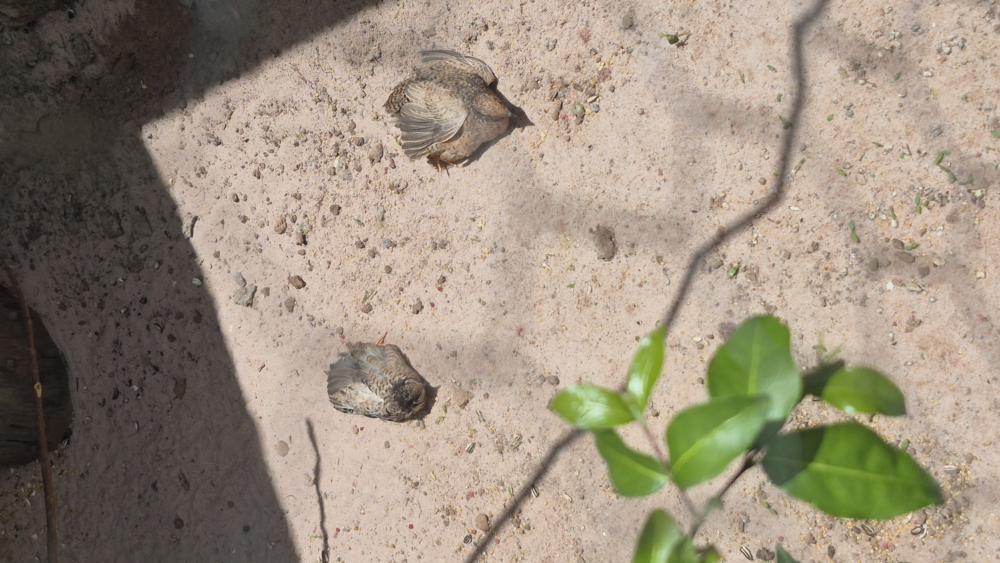

Existem centenas de combinações genéticas possíveis

Dica bonus
As Codorna-chinesa são muito usadas em viveiros porque vivem no chão e ajudam a comer sementes e restos de comida, deixando o ambiente mais limpo. Também auxiliam no controle de pequenos insetos e aproveitam um espaço que outras aves normalmente não usam. Além disso, deixam o viveiro mais bonito e movimentado.